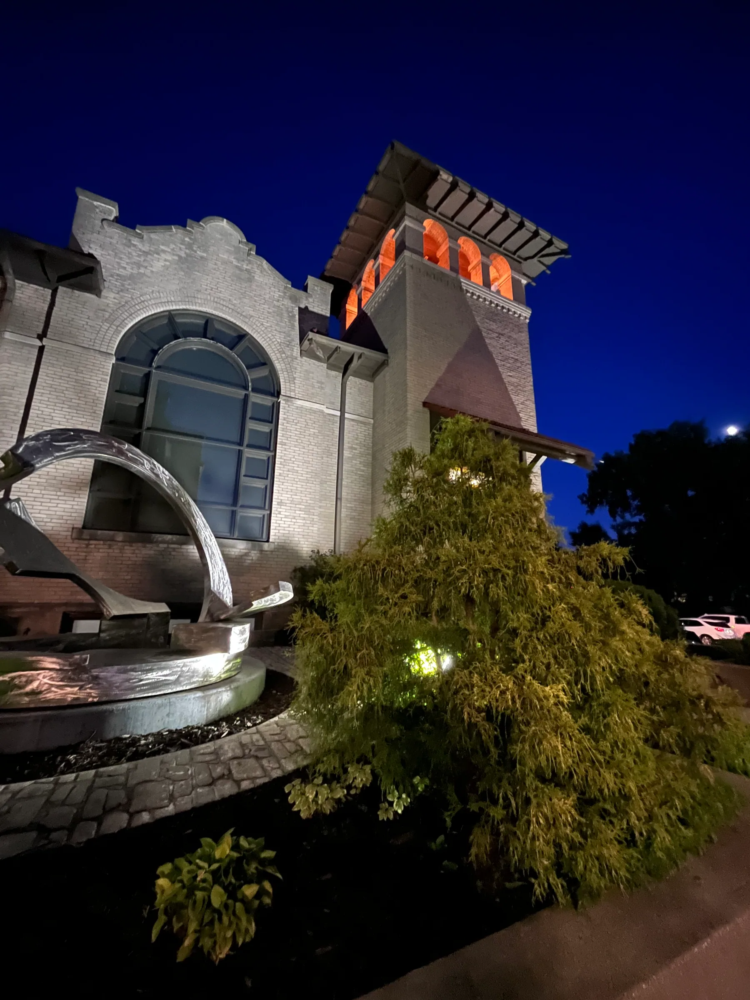
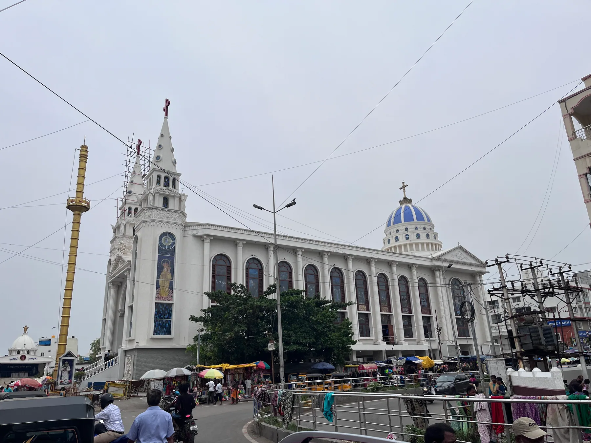

Special Interests/Architecture/Craft & Period Revivals
Room IV — Craft & Period Revivals
A building that remembers.
Arts and Crafts, Tudor Revival, Indo-Saracenic. Three movements at the end of the long nineteenth century, each of them a reaction against the catalogue — and each of them an attempt to put a particular kind of memory back into a building.
The reaction against the catalogue
By the 1860s, the most thoughtful Victorians were uneasy with what their own century had built. Industrial ornament was cheap, mass-produced, applied. Houses had become products. The craftsmen who had once carved a single staircase were now tending machines that cut a hundred of them at once. The ornament was identical from town to town, the houses interchangeable, the meaning bled out of every detail.
Three responses emerged, more or less in parallel. The Arts and Crafts movement attempted to restore the dignity of handwork itself. Tudor Revival reached back to a pre-industrial English village whose memory served as a kind of imagined antidote. And in colonial India, a peculiar hybrid called Indo-Saracenic attempted, with mixed success, to graft European institutional building onto the formal vocabulary of Mughal and Hindu architecture. All three are revivals; none of them is simply nostalgia.
Arts and Crafts — honesty as method
The Arts and Crafts movement begins in England in the 1860s around William Morris, Philip Webb, and a small circle of designers, writers, and architects who had absorbed the criticism of John Ruskin. Ruskin's argument — laid out in The Seven Lamps of Architecture (1849) and The Stones of Venice (1851 – 53) — is that the division of labour in the modern factory degrades the worker, that ornament made by an unfree hand is ornament made dishonestly, and that the great medieval cathedrals were beautiful precisely because each carved leaf had been designed and executed by the same person.
The architectural application of this argument is a style of house built — wherever possible — by craftsmen using local materials, with structural elements left visible, with ornament limited to what those craftsmen could actually make well, and with proportions modest enough that the whole enterprise stayed comprehensible. The Red House Webb built for Morris in 1859 is the canonical example: warm red brick, steep tile roofs, no applied ornament, every detail structurally honest.
Motifs of the Arts and Crafts house:
- Exposed timber framing inside the house, visible at ceiling and porch.
- Local materials — the brick, stone, or tile sourced from within a short distance of the site.
- Built-in furniture — settles, window seats, sideboards, integrated with the joinery of the room.
- Asymmetric massing — the plan dictating the elevation rather than the reverse.
- Visible craftsmanship — hand-forged ironwork, leaded glass, carved details that look made rather than ordered.
In the United States the movement crosses the Atlantic and mutates. Gustav Stickley's furniture catalogue popularises the Mission style. Greene & Greene in Pasadena produce the great American bungalows — wood-framed, generous- eaved, deeply Japanese in their joinery, infinitely careful in their craft. Frank Lloyd Wright's Prairie houses absorb the Arts and Crafts ethic and re-export it as a stylistic revolution.

Tudor Revival — the imagined village
Tudor Revival shares the Arts and Crafts movement's quarrel with industrial ornament, but answers it differently. Instead of insisting that ornament be honestly handmade, it borrows the formal language of an earlier, pre-industrial period — the actual Tudor architecture of England, c. 1485 – 1603 — and deploys it on otherwise modern suburban houses.
The defining visual feature is the half-timbered wall: dark structural-looking timbers set into white plaster panels. In most twentieth-century Tudor Revivals these timbers are purely decorative, nailed onto a conventional stud-framed wall. That fact would have horrified the Arts and Crafts purists, but it did not stop the style — by the 1910s and 1920s, Tudor Revival was the dominant idiom for affluent American suburban housing.
Motifs of Tudor Revival:
- Half-timbering — dark exposed timbers (real or applied) against white plaster.
- Steeply pitched roofs, often with multiple intersecting gables.
- Leaded casement windows with small diamond panes.
- Massive brick chimneys with decorative chimney pots.
- Round-arched or Tudor-arched doorways — the Tudor arch being a flattened pointed arch nearly horizontal at its centre.
- Stone or brick lower storey beneath a half-timbered upper storey.
The philosophical content of Tudor Revival is the construction of a deliberate cosiness. The style refers to an imagined good village of pre-industrial England — a place of hearths, hand-cut beams, and small mullioned windows — and asks the modern suburban house to participate in that memory. It is, in this sense, the architectural equivalent of a Christmas card. The Arts and Crafts movement would call the memory false; the Tudor Revival would reply that a useful memory does not need to be historically accurate.
→ See the Bloomington, Madison, and Hamilton albums for sustained Tudor Revival and Craftsman fabric on residential streets.
Indo-Saracenic — the imperial hybrid
The third and most peculiar movement in this room is the Indo-Saracenic style, developed by British architects working in colonial India between roughly 1870 and the First World War. The style attempts something none of the others does: it takes the iron-and-steel structural skeleton of nineteenth-century European public building and clothes it in the formal vocabulary of Mughal and Hindu architecture.
The architects — Robert Fellowes Chisholm, Henry Irwin, Frederick William Stevens, Swinton Jacob — wanted institutional buildings (universities, courthouses, railway termini, museums) that looked Indian rather than European, partly out of antiquarian interest and partly because the colonial government had decided that a more "native" idiom would be politically expedient. The results are remarkable. The Madras High Court (1892), the Victoria Terminus in Bombay (1887), the Mysore Palace (1912), the Senate House at the University of Madras (1879) — all of them are working European-plan buildings carrying onion domes, chhajjas, jharokhas, chhatris, jali screens, and Mughal pointed arches, often at architectural-conservatory scale.

Motifs of Indo-Saracenic building:
- Onion and bulbous domes — usually multiple, sometimes one large dome flanked by smaller corner ones.
- Chhatris — small domed kiosks on pillars, set at parapet level.
- Chhajjas — broad horizontal eaves projecting on stone brackets, designed to shade the wall from the sun.
- Jharokhas — enclosed projecting balconies supported on brackets.
- Jali screens — perforated stone lattices used in windows and parapets.
- Pointed and cusped arches in the Mughal manner.
- European structural cores — cast iron, steel, and reinforced concrete behind the Indian skin.
The Indo-Saracenic is uncomfortable to read because the buildings are stunning and the politics behind them are not. The style was, in part, an imperial gesture — a colonial state attempting to legitimise its presence by speaking the architectural language of the polity it had replaced. And yet, by the early twentieth century, Indian patrons (the Nizam of Hyderabad, the Maharajas of Mysore and Travancore) were commissioning Indo-Saracenic buildings of their own, partly as a deliberate reclamation. The hybrid had escaped the people who invented it.
→ See the Madras and Travancore albums for the South Indian Indo-Saracenic; the European-trained palace buildings carry on the conversation a century after the British have left.
Three answers to the same complaint. Restore the craftsman. Remember the village. Or wear the language of a place you have come to occupy.
What the revival building believes
The Craft and Period revivals share one conviction: that the eclectic Victorian catalogue had left modern building impoverished, and that the cure was to attach the building back to a source — a craftsman, a village, a culture — from which meaning could be re-drawn. They disagreed sharply about which source.
For Arts and Crafts the source is the maker. A building is honest if and only if you can trace each of its parts back to the person who shaped that part by hand. The movement is, at heart, an ethical position about labour translated into a stylistic position about ornament.
For Tudor Revival the source is the past. A building is honest if and only if it carries, however thinly, the memory of an earlier domestic world that the present cannot quite recover. The movement is a kind of architectural conservatism — not interested in restoring the past, only in remembering it well.
For Indo-Saracenic the source is the place. A building is honest if and only if it speaks, in its ornament, the language of the geography it sits in. The movement is the most politically loaded of the three, because the people deciding what counted as the language of the place were rarely from the place — and yet the buildings outlasted the regime that built them, and have since been claimed by the cities they sit in.
What all three share is the assumption, after a century of industrial ornament, that a building ought to mean something — that it ought to belong to a craftsman, a memory, or a city — and that mass-production alone is not a sufficient theory of building. That assumption is what the modernists would reject in their turn. But the revivals' premise — that a building should have an argument behind it, not just a catalogue — is the longest- surviving conviction of all four rooms.